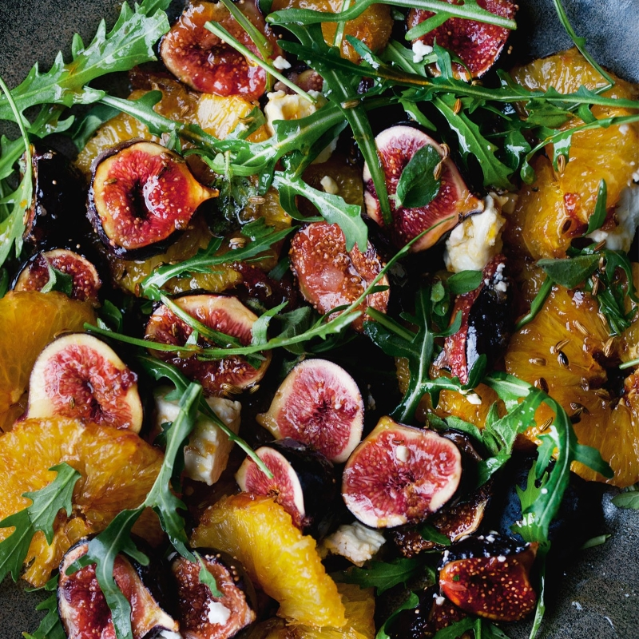
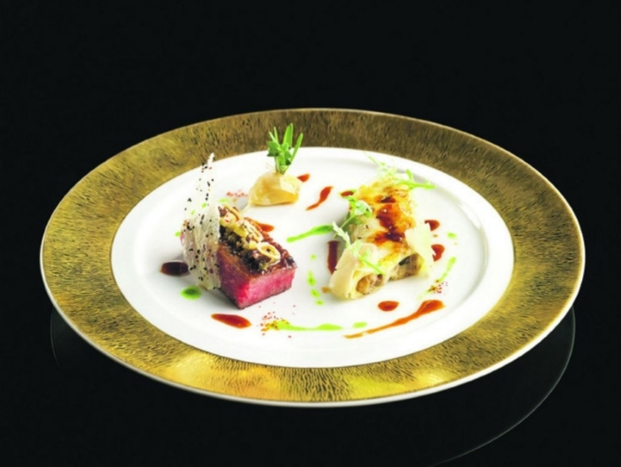

We present to you 3 dinner options that would be perfect for dinner prior to a show in West End. Most shows start at 7.30 so a 5.30pm dinner might be in order for maximum enjoyment.
Option 1
The finest salads you've ever had! NOPITim: And probably the best Israeli food you’ve ever had.
I don't know if you're part of the Ottolenghi craze that has swept 20-30 somethings in Australia in recent times. In Canberra I could hardly visit a young professional's house without seeing an Ottolenghi recipe book. If you know exactly what I'm talking about then I'll leave the decision to you. If not, this Israeli chef has swept across the world.
Sarah: The restaurant isn’t actually vegetarian but vegetables dominate. It is based in London’s West End and has a specific pre-theatre menu from 5.30-6.30pm so would be perfect for a pre-show experience and gets good reviews for its gluten-free options.


Option 2
The best mashed potato you've ever had! L'atelier de Joel RobuchonSarah: And, let’s be honest a good shot to be the best French food you’ve ever had.
Tim: Agreed. So... you know how I said above that we went to this amazing Michelin star restaurant in Paris... well there is a version of the same restaurant in London! And their mashed potato is off the chain. I can’t describe... I thought the sous chef was whipping cream but he was making mashed potato!
Sarah: Location-wise this is also perfect as the restaurant is in the West End area. They have a pre-theatre menu from 5.30-6.30pm so will be very convenient for getting to West End shows. It will also cater for gluten free. And by the way, if you don’t choose this one for London we still recommend it for Paris, and if you go there for lunch it’s quite cheap for a Michelin Star restaurant! And it’s just down the road from the Arc de Triomph!
Option 3
The best dahl you’ve ever had? DishoomTim: This is a London institution. It has rapidly expanded to multiple locations and we have been there at least four times despite the fact that you can't actually book a table for a group under 6 people. One must line up and waits can be regularly over an hour. To combat this we could either line up from right on 5pm or, if Chappo and Emma were willing to join for the early dinner we could book a table for six.
This restaurant has also previously made a Telegraph list of the Top 10 Gluten Free restaurants in London. Gluten-free options are to mix their grills with salad.
Sarah: Most importantly, their black dahl, which is divine, is gluten free! They situated at Covent Garden, just next to West End.